Wonder Mat
Spring 2026
- Group members:
- Eileen Lee
Challenge:
Open-ended play lets children choose, imagine, and negotiate freely, but the conditions for it are shrinking. The project strives to find what kind of foundational element could invite autonomous creation again.
Design:
A dual-layer play system pairing physical building with spatial projection. Children build a story world from open-ended blocks on the mat, and a projection system reads the pieces and extends it onto the surrounding walls in real time.
Outcome:
Projection is treated as an extension of physical play rather than a replacement for it. Children remain the authors of the world, while the system amplifies what they build.
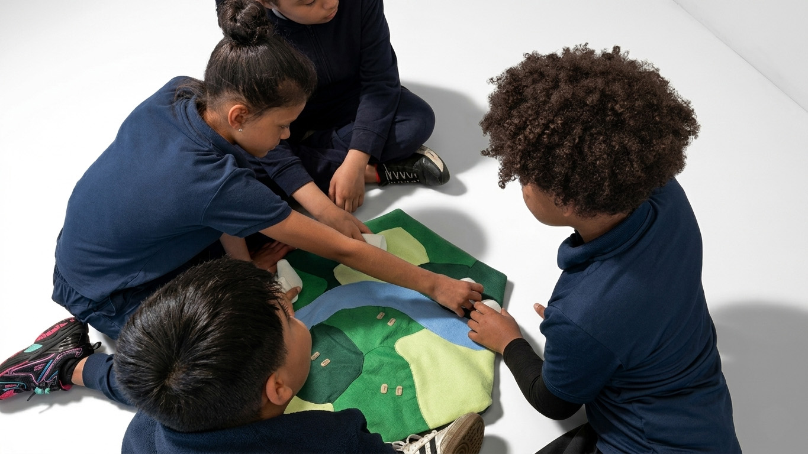
1.Background Research
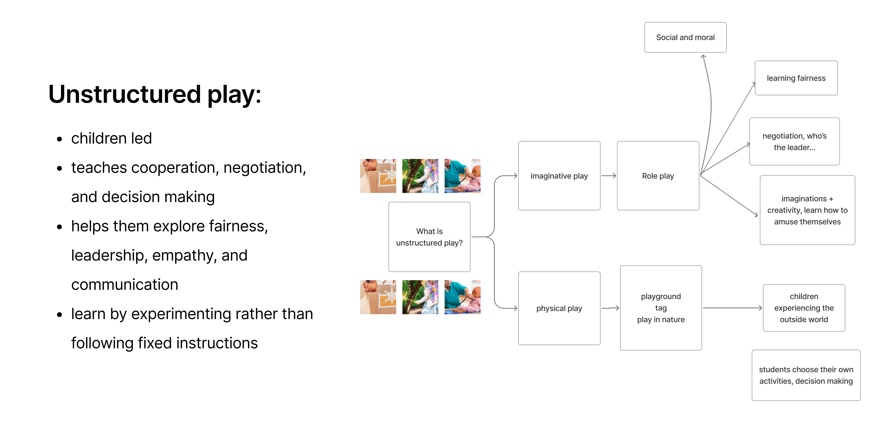
Unstructured play lets children choose, imagine, and negotiate on their own terms, developing creativity, social skills, and decision-making through a process with no fixed answer.
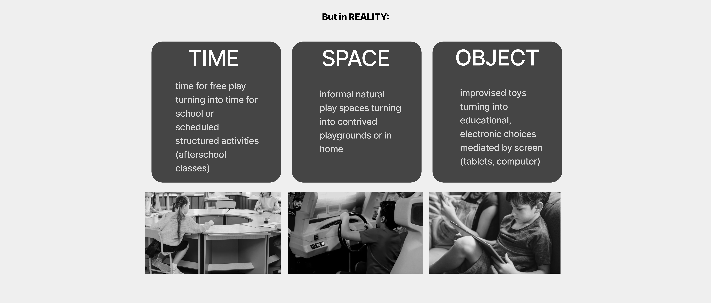
2.Idea Development
Goal:Explore how offering more engaging foundational elements can encourage children’s autonomous creation, imagination, and interaction during open-ended play.
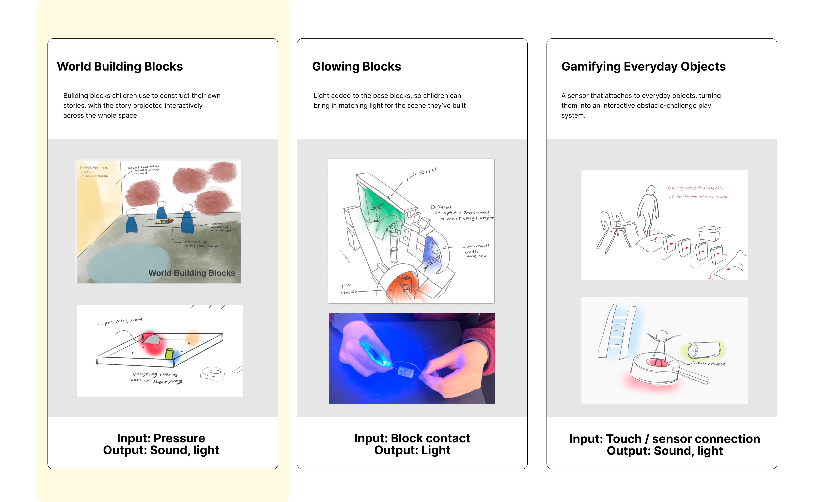
Out of the 3 concepts, we went with the first idea as it offers richer foundational elements for children to create and imagine.
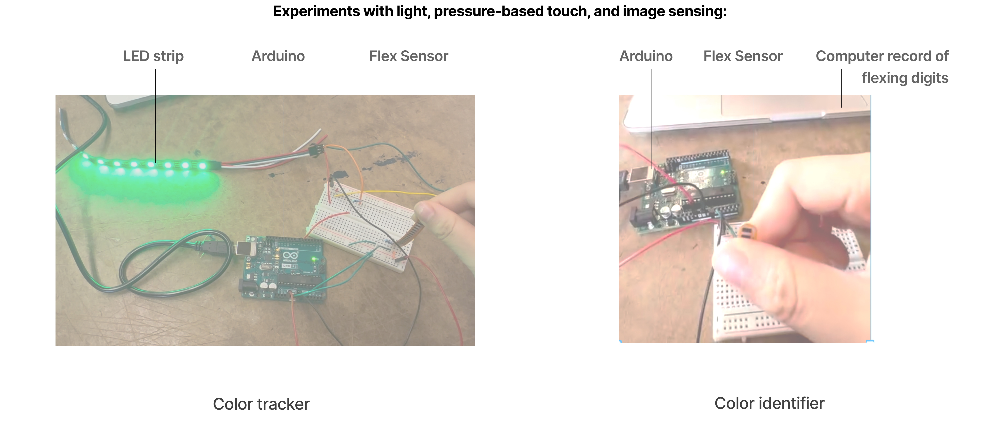
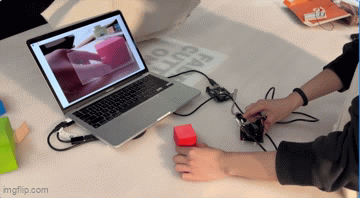
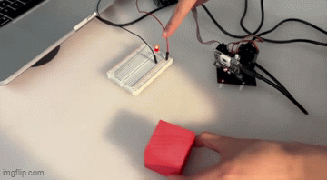
3.Concept Refinement
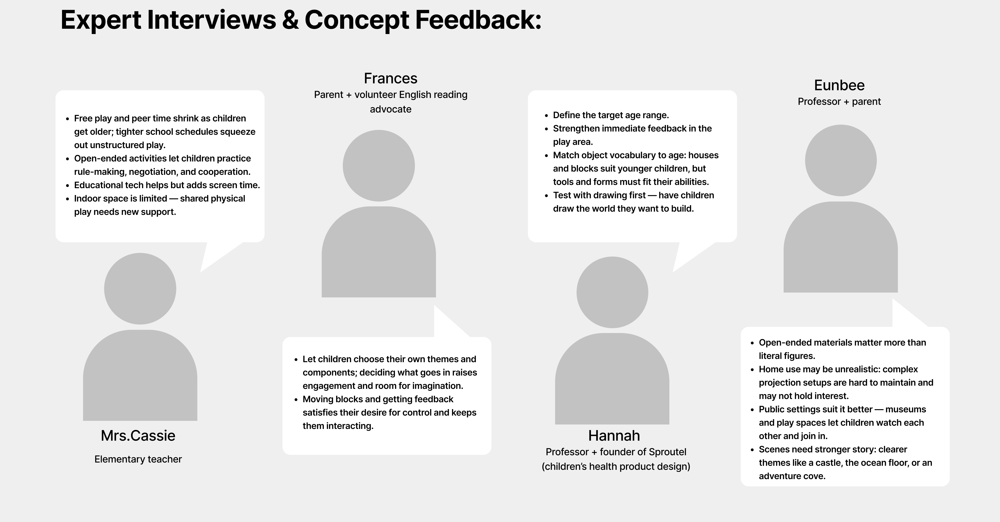
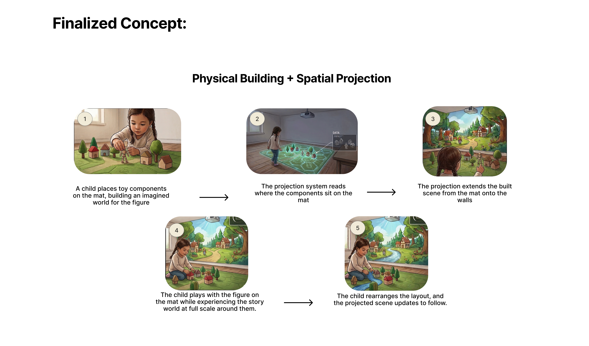
4.Final Production

5.Playtest

6.Final Photos
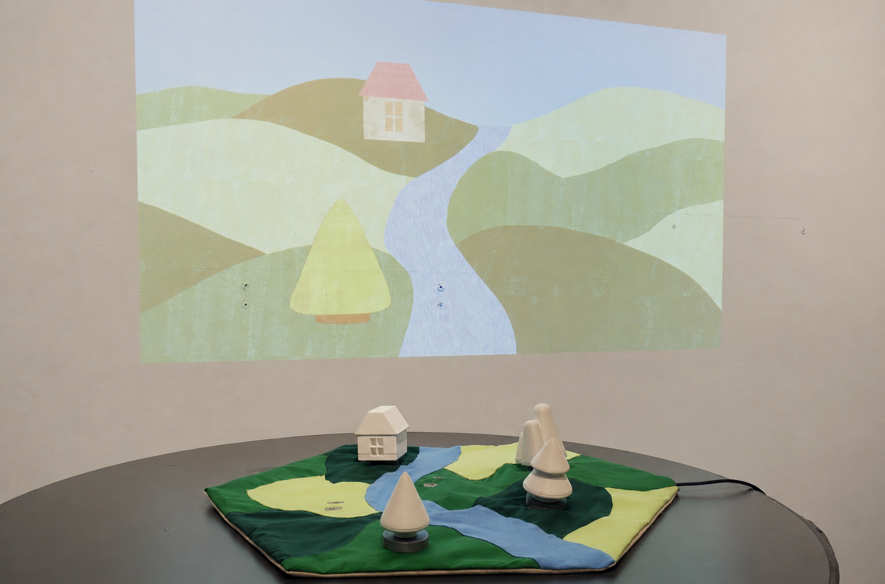
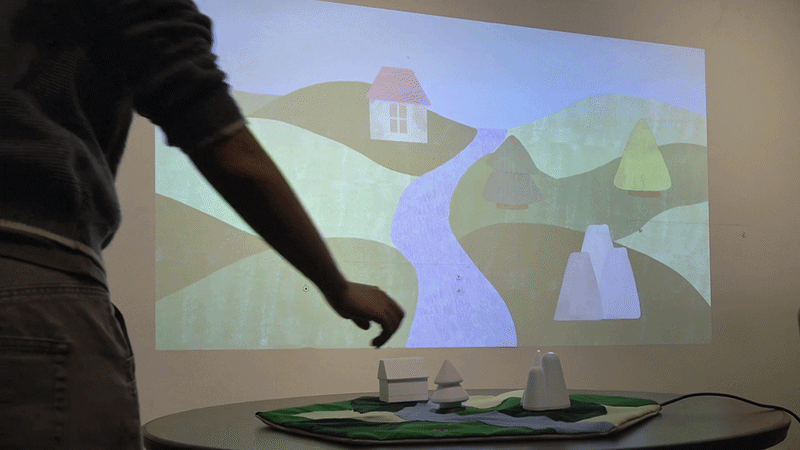
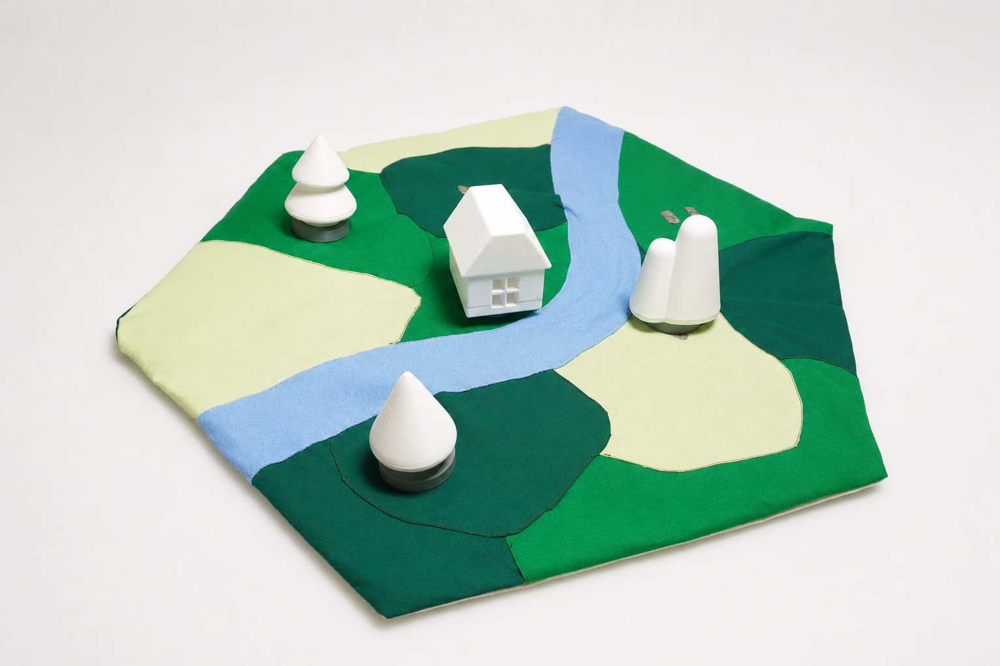
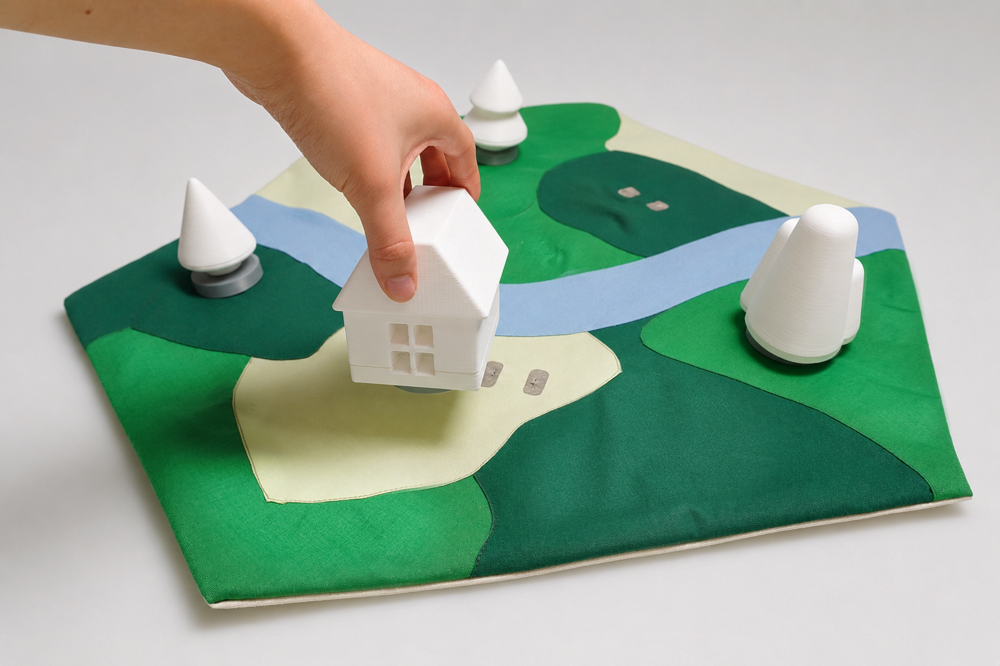
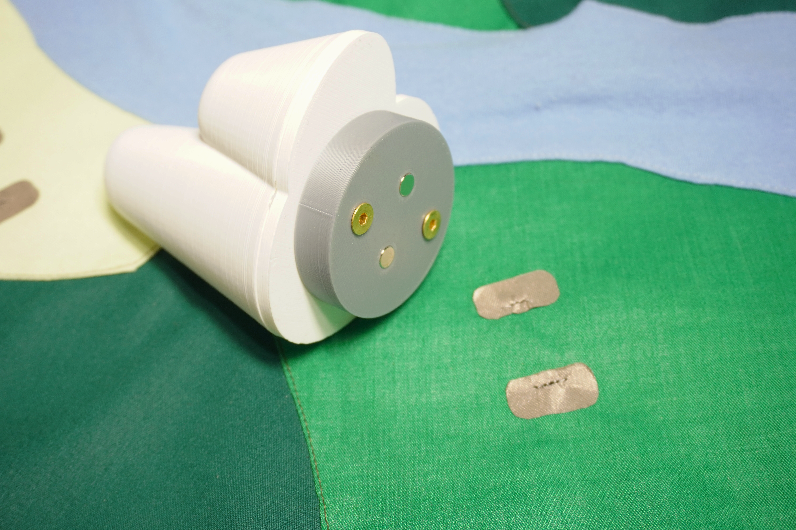
7.Future Direction
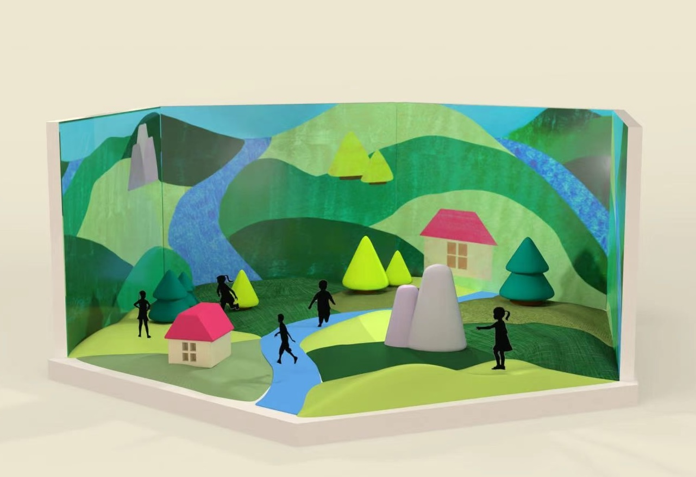
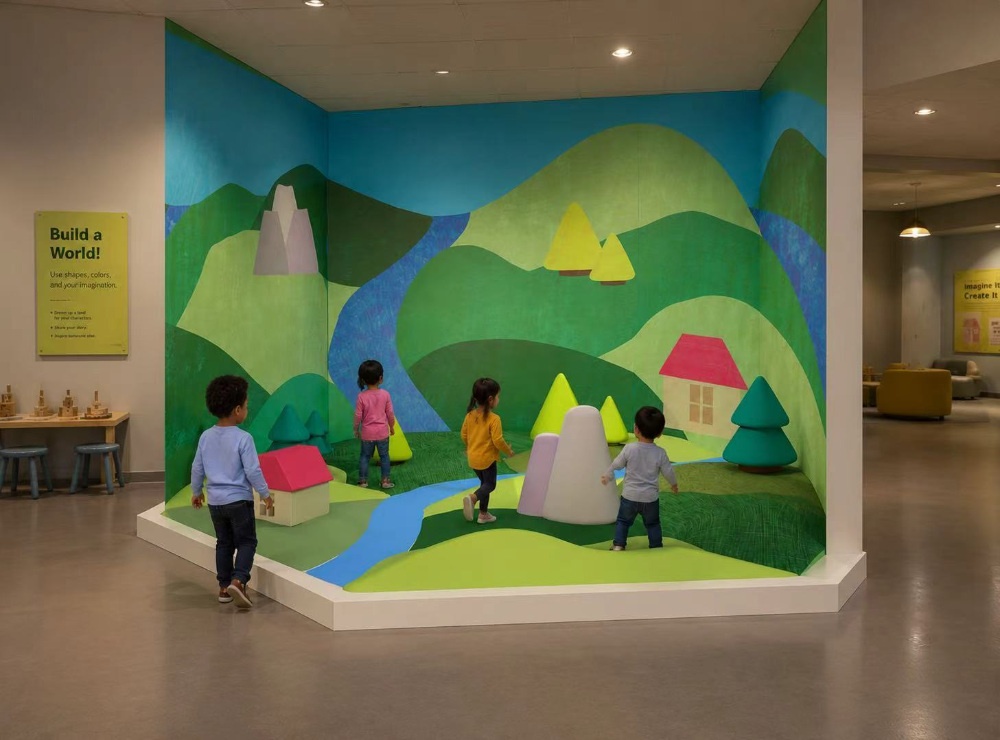
Considering the effort to set up projects and blocks in a home setting, we also envisioned this design to be installed in a public setting. A scaled-up version also provides a more immersive projection.
Model created in Rhino (left); Vision of setup generated with ChatGPT (right)